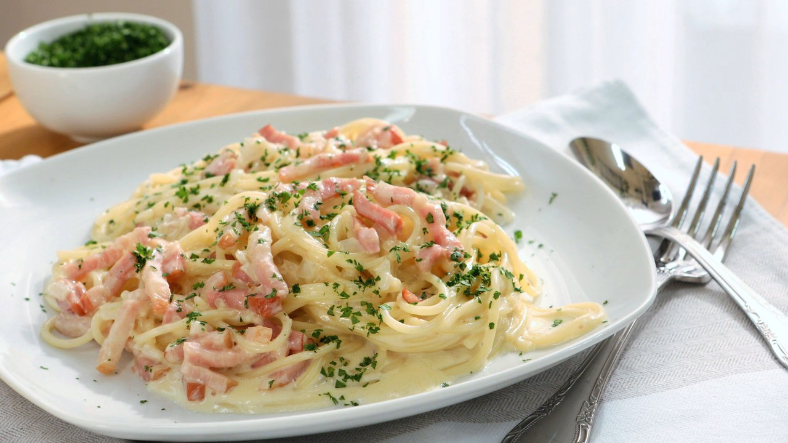

Espaguetis a la Carbonara
20 diciembre, 2021
- Tiempo: 20 minutos
- Dificultad: Baja
- Raciones: 4
- Vegetariana: No
- Autor: Adrian Castro
Los espaguetis a la carbonara es probablemente la forma más internacional de preparar esta pasta. La auténtica salsa carbonara de italia contiene yema de huevo, queso y bacon. No tiene nata, ingrediente que le solemos añadir en España. Puedes hacerla así, si quieres pero aquí, haremos unos espaguetis a la carbonara auténticos.